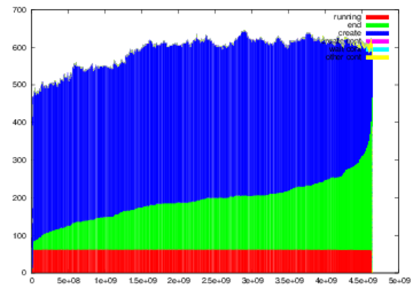
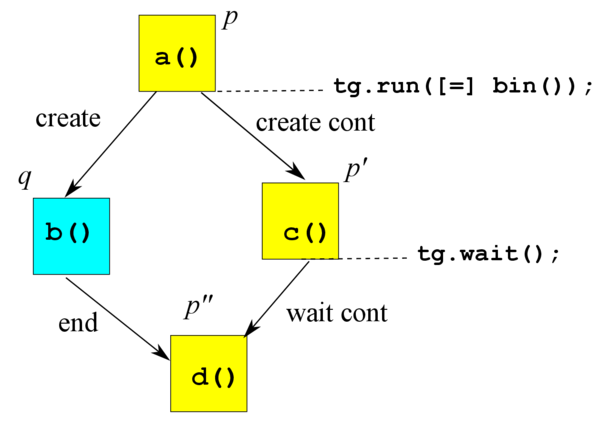
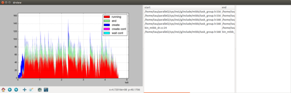

Copyright 2010-2014 Jun Nakashima (Read COPYRIGHT for detailed information.)
Copyright 2010-2014 Kenjiro Taura (Read COPYRIGHT for detailed information.)
Next: MassiveThreads Library, Previous: (dir), Up: (dir) [Contents]
Next: Higher-Level Interfaces, Previous: Top, Up: Top [Contents]
TODO: write about the library API itself.
Next: DAG Recorder, Previous: MassiveThreads Library, Up: Top [Contents]
| • Higher Level Interfaces Overview: | ||
| • TBB-Compatible Interface: | ||
| • Task Parallel Switcher: |
Next: TBB-Compatible Interface, Previous: Higher-Level Interfaces, Up: Higher-Level Interfaces [Contents]
MassiveThreads API described so far is still low level and bit burdensome as a parallel programming interface. MassiveThreads also provides higher level APIs, easier and more convenient APIs for programmers.
One is what we call TBB-compatible interface, that provides a subset of functions of Intel Threading Building Block. It does not only provide TBB-compatible interface, but also allows you to switch between various lightweight thread libraries under the same TBB-compatible interface. Currently supported libraries include MassiveThreads, Qthreads, Nanos++, and what we call a dummy scheduler. The last one elides task parallel primitives.
The other interface is what we call a task parallel switcher, with which you can write a single program running on top of even wider set of task parallel systems including OpenMP, Cilk, and TBB.
Besides providing a uniform API on various runtime systems, they serve another important purpose, which is to allow you to trace your task parallel programs with DAG Recorder, a tracing tool described later in this manual. See DAG Recorder. By programming in these APIs, rather than in the native API of the respective runtime system, your are free from the burden of manually instrumenting your programs for tracing. To this end, we also provide headers to facilitate instrumentation of OpenMP and Cilk. They do not serve any purpose of making OpenMP and Cilk more convenient nor more uniform; they simply make instrumenting OpenMP and Cilk easier.
Here is the summary of choices of APIs and runtime systems.
| API | Runtime System | Header file | flags |
|---|---|---|---|
| TBB-compatible | None (dummy) | mtbb/task_group.h | -DTO_SERIAL |
| TBB-compatible | Intel TBB | mtbb/task_group.h | -DTO_TBB -ltbb |
| TBB-compatible | MassiveThreads | mtbb/task_group.h | -lmyth-native |
| TBB-compatible | Qthreads | mtbb/task_group.h | -DTO_QTHREAD -lqthread |
| TBB-compatible | Nanos++ | mtbb/task_group.h | -DTO_NANOX -lnanox-c |
| OpenMP-like | OpenMP | tpswitch/omp_dr.h | |
| Cilk-like | Cilk | tpswitch/cilk_dr.h | |
| Cilkplus-like | Cilkplus | tpswitch/cilk_dr.h | |
| Task Parallel Switcher | None (dummy) | tpswitch/tpswitch.h | -DTO_SERIAL |
| Task Parallel Switcher | Intel TBB | tpswitch/tpswitch.h | -DTO_TBB -ltbb |
| Task Parallel Switcher | MassiveThreads | tpswitch/tpswitch.h | -DTO_MTHREAD_NATIVE -lmyth-native |
| Task Parallel Switcher | Qthreads | tpswitch/tpswitch.h | -DTO_QTHREAD -lqthread |
| Task Parallel Switcher | Nanos++ | tpswitch/tpswitch.h | -DTO_NANOX -lnanox-c |
| Task Parallel Switcher | OpenMP | tpswitch/tpswitch.h | -DTO_OMP |
| Task Parallel Switcher | Cilk | tpswitch/tpswitch.h | -DTO_CILK |
| Task Parallel Switcher | Cilkplus | tpswitch/tpswitch.h | -DTO_CILKPLUS |
Next: Task Parallel Switcher, Previous: Higher Level Interfaces Overview, Up: Higher-Level Interfaces [Contents]
| • TBB-Compatible Interface Overview: | ||
| • Installing TBB-Compatible Interface: | ||
| • Writing Programs Using TBB-Compatible Interface: | ||
| • Choosing Schedulers Beneath the TBB-Compatible Interface: |
Next: Installing TBB-Compatible Interface, Previous: TBB-Compatible Interface, Up: TBB-Compatible Interface [Contents]
As of writing, it supports task_group class, parallel_for template function, and parallel_reduce template function. See respective sections of the TBB reference manual for these classes. We will see examples using task_group class below.
Next: Writing Programs Using TBB-Compatible Interface, Previous: TBB-Compatible Interface Overview, Up: TBB-Compatible Interface [Contents]
TBB-compatible interface is distributed as a part of MassiveThreads, so you do not do anything particular to install it besides the installation procedure of MassiveThreads.
After installation, the files constituting the API are installed as:
Note that they are under mtbb directory, instead of tbb directory as in the original TBB.
Next: Choosing Schedulers Beneath the TBB-Compatible Interface, Previous: Installing TBB-Compatible Interface, Up: TBB-Compatible Interface [Contents]
Using TBB-Compatible interface is a lot like using the regular TBB. You include mtbb/{task_group,parallel_for,parallel_reduce}.h instead of tbb/{task_group,parallel_for,parallel_reduce}.h, and use namespace mtbb instead of namespace tbb.
Here is a simple example (bin_mtbb.cc).
#include <mtbb/task_group.h>
long bin(int n) {
if (n == 0) return 1;
else {
mtbb::task_group tg;
long x, y;
tg.run([=,&x] { x = bin(n - 1); });
y = bin(n - 1);
tg.wait();
return x + y;
}
}
int main(int argc, char ** argv) {
int n = atoi(argv[1]);
long x = bin(n);
printf("bin(%d) = %ld\n", n, x);
return 0;
}
I hope you agree that changes are minimal. The original TBB version would look like this (only differences are the file name of the include file and namespace prefix of the task_group class).
#include <tbb/task_group.h>
long bin(int n) {
if (n == 0) return 1;
else {
tbb::task_group tg;
long x, y;
tg.run([=,&x] { x = bin(n - 1); });
y = bin(n - 1);
tg.wait();
return x + y;
}
}
int main(int argc, char ** argv) {
int n = atoi(argv[1]);
long x = bin(n);
printf("bin(%d) = %ld\n", n, x);
return 0;
}
Without DAG Recorder, you would compile bin_mtbb.cc as follows.
$ g++ --std=c++0x bin_mtbb.cc -lmyth-native
Remark 1: --std=c++0x is given to use C++ lambda expression at line 8, proposed in C++0x and standardized in C++11. GCC supports it since 4.5, when one of the following command line options --std=c++0x, --std=gnu0x, --std=c++11, or --std=gnu11 is supplied. If your GCC does not support it, you could pass any callable object (any object supporting operator()). We use lambda expressions for brevity in this manual.
Remark 2: Depending on your configuration, you might need to add -I, -L, and -Wl,-R options to the command line. For example, if you install MassiveThreads under /home/you/local (i.e., gave /home/you/local to --prefix of the configure command), the command line will be:
$ g++ --std=c++0x -I/home/you/local/include -L/home/you/local/lib -Wl,-R/home/you/local/lib bin_mtbb.cc -lmyth-native
With the above command, you get a program that uses TBB-compatible API with MassiveThreads as the underlying scheduler. Roughly speaking, task_group’s run method will create a thread of MassiveThreads library via myth_create and wait method will wait for all threads associated with the task group object to finish via myth_join.
The mtbb/task_group.h file allows you to use threading libraries other than MassiveThreads, by defining a compile time flag TO_XXX. Currently, you can choose from the original Intel TBB, MassiveThreads, Qthreads, Nanos++, or None. Flags you should give to them are listed below.
| Runtime system | Flag |
|---|---|
| Intel TBB | -DTO_TBB |
| MassiveThreads | -DTO_MTHREAD_NATIVE (or nothing) |
| Qthreads | -DTO_QTHREAD |
| Nanos++ | -DTO_NANOX |
| None | -DTO_SERIAL |
The last one, None, elides all tasking primitives; run(c) executes c() serially and wait() is a noop.
In order to use mtbb/task_group.h with the scheduler you chose, you of course need to install the respective scheduler and link your program with it.
Previous: TBB-Compatible Interface, Up: Higher-Level Interfaces [Contents]
TBB-compatible interface unifies various schedulers under the same, TBB-compatible interface. Task parallel switcher goes one step further by defining an API that can be mapped onto OpenMP and Cilk as well.
OpenMP, Cilk, and TBB’s task_group interfaces are all conceptually very similar; they all define ways to create tasks and wait for outstanding tasks to finish, after all.
Yet there are idiosyncrasies that make defining truly uniform APIs difficult.
TODO: detail the following
Previous: Higher-Level Interfaces, Up: Top [Contents]
Next: Installing DAG Recorder, Previous: DAG Recorder, Up: DAG Recorder [Contents]
DAG Recorder is a tracing tool to analyze execution of task parallel programs. It records all relevant events in an execution of the program, such as task start, task creation, and task synchronization and stores them in a manner that is able to reconstruct the computational DAG of the execution.
Next: Writing Programs That Use DAG Recorder, Previous: DAG Recorder Overview, Up: DAG Recorder [Contents]
DAG Recorder is distributed as a part of MassiveThreads, so installing MassiveThreads automatically installs DAG Recorder too. DAG Recorder does not internally depend on MassiveThreads in any way, however; you can, for example, use DAG Recorder to analyze TBB or OpenMP programs.
After installation, files directly visible to the user are the following.
where PREFIX is the path you specified with --prefix at configure command line.
In most cases, you do not have to directly include dag_recorder.h. TBB-compatible interface or aforementioned wrappers (omp_dr.h and cilk_dr.h) will automatically include it.
Next: Running Your Programs with DAG Recorder, Previous: Installing DAG Recorder, Up: DAG Recorder [Contents]
| • Common Basics: | ||
| • Using DAG Recorder with TBB-Compatible Interface: | ||
| • Using DAG Recorder with OpenMP: | ||
| • Using DAG Recorder with Cilk and CilkPlus: | ||
| • Using DAG Recorder with tpswitch.h: |
Next: Using DAG Recorder with TBB-Compatible Interface, Previous: Writing Programs That Use DAG Recorder, Up: Writing Programs That Use DAG Recorder [Contents]
Currently, DAG Recorder supports the following task parallel APIs.
Making your programs ready for DAG Recorder involves replacing original task parallel primitives with equivalent, instrumented versions. You also need to specify where to start/stop instrumentation and dump the result. We provide header files to make the instrumentation nearly automatic or at least quite mechanical. What you exactly need to do depends on the programming model you chose and are detailed in the following subsections.
Next: Using DAG Recorder with OpenMP, Previous: Common Basics, Up: Writing Programs That Use DAG Recorder [Contents]
If you are using TBB-Compatible Interface (see Writing Programs Using TBB-Compatible Interface), the instrumentation is most straightforward and least intrusive. Let’s say you have a program including mtbb/task_group.h such as this.
#include <mtbb/task_group.h>
long bin(int n) {
if (n == 0) return 1;
else {
mtbb::task_group tg;
long x, y;
tg.run([=,&x] { x = bin(n - 1); });
y = bin(n - 1);
tg.wait();
return x + y;
}
}
int main(int argc, char ** argv) {
int n = atoi(argv[1]);
long x = bin(n);
printf("bin(%d) = %ld\n", n, x);
return 0;
}
Instrumentation is turned on simply by giving -DDAG_RECORDER=2 at the command line. What else you need to do is to insert calls to dr_start, dr_stop, and dr_dump at appropriate places like this (bin_mtbb_dr.cc).
#include <mtbb/task_group.h>
long bin(int n) {
if (n == 0) return 1;
else {
mtbb::task_group tg;
long x, y;
tg.run([=,&x] { x = bin(n - 1); });
y = bin(n - 1);
tg.wait();
return x + y;
}
}
int main(int argc, char ** argv) {
int n = atoi(argv[1]);
dr_start(0);
long x = bin(n);
dr_stop();
dr_dump();
printf("bin(%d) = %ld\n", n, x);
return 0;
}
As you will see already, you should insert:
dr_start(0) at the point you want to start recording,
dr_stop() at the point you want to stop recording, and
dr_dump() at the point you want to dump the result.
dr_start takes a pointer, which may be zero, to dr_options data structure as the argument.
Controlling the Behavior of DAG Recorder for options you can specify.
Here are the command lines to compile this program, with and without DAG Recorder
g++ --std=c++0x bin_mtbb_dr.cc -DDAG_RECORDER=2 -ldr -lmyth-native
g++ --std=c++0x bin_mtbb_dr.cc -lmyth-native
The reason why you set DAG_RECORDER to “2” is historical. There was a version one, which have become obsolete by now.
You could switch to other schedulers in the way described already. See Choosing Schedulers Beneath the TBB-Compatible Interface. For example, you will get the original TBB scheduler with the following command line.
g++ --std=c++0x bin_mtbb_dr.cc -DTO_TBB -DDAG_RECORDER=2 -ldr -ltbb
Next: Using DAG Recorder with Cilk and CilkPlus, Previous: Using DAG Recorder with TBB-Compatible Interface, Up: Writing Programs That Use DAG Recorder [Contents]
OpenMP uses directives (pragma omp task and pragma omp
taskwait) to express task parallel programs. It almost always uses
pragma omp parallel and pragma omp single (or pragma
omp master) to enter a task parallel section. Here is an equivalent
program to our example, written in the regular OpenMP.
#include <stdio.h>
#include <stdlib.h>
long bin(int n) {
if (n == 0) return 1;
else {
long x, y;
#pragma omp task shared(x)
x = bin(n - 1);
#pragma omp task shared(y)
y = bin(n - 1);
#pragma omp taskwait
return x + y;
}
}
int main(int argc, char ** argv) {
int n = atoi(argv[1]);
#pragma omp parallel
#pragma omp single
{
long x = bin(n);
printf("bin(%d) = %ld\n", n, x);
}
return 0;
}
We need to instrument these pragmas, for which we defined equivalent macros (not pragmas) in a header file tpswitch/omp_dr.h. This is not as straightforward as we hope, but we do not know any good mechanism to introduce a new pragma or redefine existing pragmas.
tpswitch/omp_dr.h defines the following macros.
pragma_omp_task(clauses, statement)
pragma_omp_taskwait
pragma_omp_parallel_single(clauses, statement)
Without DAG Recorder, they are expanded into equivalent OpenMP pragmas in an obvious manner:
#pragma omp task clauses statement
#pragma omp taskwait
#pragma omp parallel clauses
#pragma omp single
{
statement
}
So, here is DAG Recorder-ready version of the above program.
#include <stdio.h>
#include <stdlib.h>
#include <tpswitch/omp_dr.h>
long bin(int n) {
if (n == 0) return 1;
else {
long x, y;
pragma_omp_task(shared(x),
x = bin(n - 1));
pragma_omp_task(shared(y),
y = bin(n - 1));
pragma_omp_taskwait;
return x + y;
}
}
int main(int argc, char ** argv) {
int n = atoi(argv[1]);
pragma_omp_parallel_single(, {
dr_start(0);
long x = bin(n);
dr_stop();
printf("bin(%d) = %ld\n", n, x);
dr_dump();
});
return 0;
}
This source code can be compiled with and without DAG Recorder.
g++ -fopenmp bin_omp_dr.cc
g++ -fopenmp -DDAG_RECORDER=2 bin_omp_dr.cc -ldr
Next: Using DAG Recorder with tpswitch.h, Previous: Using DAG Recorder with OpenMP, Up: Writing Programs That Use DAG Recorder [Contents]
There are two versions of Cilk; the original MIT Cilk and CilkPlus. The former is implemented as a source to source translator (cilkc) and it is a strictly C extension (C++ not supported). The latter is natively supported by Intel C++ Compiler and GCC version $\geq$ 4.9. It supports both C and C++ for writing serial parts. DAG Recorder supports both Cilk and CilkPlus. Hereafter, when we say Cilk, it means the original MIT Cilk version.
CilkPlus uses directives _Cilk_spawn and _Cilk_sync statements.
Here is our example in CilkPlus.
#include <stdio.h>
#include <stdlib.h>
long bin(int n) {
if (n == 0) return 1;
else {
long x, y;
x = _Cilk_spawn bin(n - 1);
y = _Cilk_spawn bin(n - 1);
_Cilk_sync;
return x + y;
}
}
int main(int argc, char ** argv) {
int n = atoi(argv[1]);
long x;
x = _Cilk_spawn bin(n);
_Cilk_sync;
printf("bin(%d) = %ld\n", n, x);
return 0;
}
Alternatively you can include <cilk/cilk.h> and use more human friendly cilk_spawn and cilk_sync keywords.
#include <stdio.h>
#include <stdlib.h>
#include <cilk/cilk.h>
long bin(int n) {
if (n == 0) return 1;
else {
long x, y;
x = cilk_spawn bin(n - 1);
y = cilk_spawn bin(n - 1);
cilk_sync;
return x + y;
}
}
int main(int argc, char ** argv) {
int n = atoi(argv[1]);
long x;
x = cilk_spawn bin(n);
cilk_sync;
printf("bin(%d) = %ld\n", n, x);
return 0;
}
Cilk uses directives spawn and sync statements to create and synchronize tasks.
Here is our example in Cilk.
#include <stdio.h>
#include <stdlib.h>
cilk long bin(int n) {
if (n == 0) return 1;
else {
long x, y;
x = spawn bin(n - 1);
y = spawn bin(n - 1);
sync;
return x + y;
}
}
cilk int main(int argc, char ** argv) {
int n = atoi(argv[1]);
long x;
x = spawn bin(n);
sync;
printf("bin(%d) = %ld\n", n, x);
return 0;
}
There is a subtle but important difference between Cilk and CilkPlus.
In Cilk, a function that spawns a task needs to be explicitly marked as
a cilk procedure by the cilk keyword at function declaration;
and, once a procedure is marked as a cilk procedure, it cannot be called
by a regular function call syntax; it must always be spawned. That is,
in our example, the following is prohibited.
int x = bin(n);
It must instead be written as
int x; x = spawn bin(n); sync;
As a result, the enclosing function must also be marked as a cilk procedure.
Whether you use Cilk or CilkPlus, modifications necessary to make these programs ready are summarized as follows.
spawn, cilk_spawn, and _Cilk_spawn statements with spawn_(...) macro. e.g.,
y = cilk_spawn f(x);
should be rewritten to:
spawn_(y = cilk_spawn f(x));
sync and cilk_sync statements with sync_ and cilk_sync_, respectively.
cilk_begin. This is to indicate the beginning of a task. If you forget this, a compilation error should result, complaining “no such variable __cilk_begin__”;
cilk_return(val) or cilk_void_return, depending on whether the return statement returns a value. This is to indicate the end of a task.
(TODO : wish to fix this) If you forget this, a compilation succeeds, but DAG Recorder fails.
cilk_begin
into a function, that function always needs to be spawned. That is,
such a function cannot be called by a normal function call syntax.
This is prohibited in MIT Cilk
anyways and flagged as a compilation error. It is on you when
you use CilkPlus, which allows task-spawning functions to be
called serially without spawn keywords. If you forget this, there
are no compilation errors and DAG Recorder will be confused.
Here is the modified CilkPlus program.
#include <stdio.h>
#include <stdlib.h>
#include <tpswitch/cilkplus_dr.h>
long bin(int n) {
cilk_begin;
if (n == 0) cilk_return(1);
else {
long x, y;
spawn_(x = cilk_spawn bin(n - 1));
spawn_(y = cilk_spawn bin(n - 1));
cilk_sync_;
cilk_return(x + y);
}
}
int main(int argc, char ** argv) {
cilk_begin;
int n = atoi(argv[1]);
dr_start(0);
long x;
spawn_(x = cilk_spawn bin(n));
cilk_sync_;
dr_stop();
printf("bin(%d) = %ld\n", n, x);
dr_dump();
cilk_return(0);
}
And here is Cilk version.
#include <stdio.h>
#include <stdlib.h>
#include <cilk/cilk.h>
long bin(int n) {
if (n == 0) return 1;
else {
long x, y;
x = cilk_spawn bin(n - 1);
y = cilk_spawn bin(n - 1);
cilk_sync;
return x + y;
}
}
int main(int argc, char ** argv) {
int n = atoi(argv[1]);
long x;
x = cilk_spawn bin(n);
cilk_sync;
printf("bin(%d) = %ld\n", n, x);
return 0;
}
This source code can be compiled with and without DAG Recorder.
g++ -fcilkplus bin_cilkplus_dr.c
g++ -fcilkplus -DDAG_RECORDER=2 bin_cilkplus_dr.c -ldr
cilkc bin_cilk_dr.cilk
cilkc -DDAG_RECORDER=2 bin_cilk_dr.cilk -ldr
Instrumeting Cilk or CilkPlus programs is admittedly more burdensome
than instrumenting OpenMP or TBB. The main reason for this is that
Cilk’s spawn statement and CilkPlus’s cilk_spawn
statement create a task
that executes the body of a procedure, rather than an entire
procedure call statement, so we need to mark the beginning of the called
procedure as the beginning of the task. That’s why you need to insert
cilk_begin. The difference between the two is subtle, but
consider the following example.
spawn f(g(x));
In this Cilk code, evaluation of g(x) is not performed by the
spawned task, so there is no way to mark the beginning of the task by
tweaking macros that receive the entire procedure call statement.
In contrast, a similar TBB code:
tg.run([=] { f(g(x)); });
spawns a task that performs f(g(x)) entirely.
To make matters even simpler, the task spawning primitive
is just another method rather than a builtin syntax,
which we can transparently instrument by having another
class that implements run method.
Previous: Using DAG Recorder with Cilk and CilkPlus, Up: Writing Programs That Use DAG Recorder [Contents]
Just give -DDAG_RECORDER=2 and respective linker options (e.g., -lmyth-native -ldr -lpthread) to the command line.
TODO: more detailed and reader-friendly description.
Next: dag2any DAG to any data converter, Previous: Writing Programs That Use DAG Recorder, Up: DAG Recorder [Contents]
| • Basics of Running Your Programs with DAG Recorder: | ||
| • Controlling the Behavior of DAG Recorder: |
Next: Controlling the Behavior of DAG Recorder, Previous: Running Your Programs with DAG Recorder, Up: Running Your Programs with DAG Recorder [Contents]
Once you obtained an executable compiled and linked with DAG Recorder, you can run it just normally.
$ ./bin_mtbb_dr 20 bin(20) = 1048576
You will find the following three files generated under the current directory.
Run this program with setting environment variable DR=0, and you
can run the program with DAG Recorder turned off.
$ DR=0 ./bin_mtbb_dr 20 bin(20) = 1048576
It still imposes a small overhead (essentially, looking up a global
variable + branch) for each tasking primitive. We believe this overhead
is rarely an issue, but if you want to completely eliminate this
overhead, compile the program without DAG_RECORDER=2.
Previous: Basics of Running Your Programs with DAG Recorder, Up: Running Your Programs with DAG Recorder [Contents]
The behavior of DAG Recorder can be controlled either from within the
program or by environment variables; you can pass a pointer to
dr_options structure to dr_start, which has been 0 in the
examples we have shown so far. If the argument to dr_start is
null (zero), options can be set via environment variables. We will
illustrate how they work.
First about environment variables. Run the program with setting the
environment variable DR_VERBOSE to 1, and you will see the
list of environment variables and their values printed by
dr_start. You will also see messages about files generated by
dr_dump.
$ DR_VERBOSE=1 ./bin_mtbb_dr 10 DAG Recorder Options: dag_file_prefix (DAG_RECORDER_DAG_FILE_PREFIX,DR_PREFIX) : 00dr dag_file_yes (DAG_RECORDER_DAG_FILE,DR_DAG) : 1 stat_file_yes (DAG_RECORDER_STAT_FILE,DR_STAT) : 1 gpl_file_yes (DAG_RECORDER_GPL_FILE,DR_GPL) : 1 dot_file_yes (DAG_RECORDER_DOT_FILE,DR_DOT) : 0 text_file_yes (DAG_RECORDER_TEXT_FILE,DR_TEXT) : 0 gpl_sz (DAG_RECORDER_GPL_SIZE,DR_GPL_SZ) : 4000 text_file_sep (DAG_RECORDER_TEXT_FILE_SEP,DR_TEXT_SEP) : | dbg_level (DAG_RECORDER_DBG_LEVEL,DR_DBG) : 0 verbose_level (DAG_RECORDER_VERBOSE_LEVEL,DR_VERBOSE) : 1 chk_level (DAG_RECORDER_CHK_LEVEL,DR_CHK) : 0 uncollapse_min (DAG_RECORDER_UNCOLLAPSE_MIN,DR_UNCOLLAPSE_MIN) : 0 collapse_max (DAG_RECORDER_COLLAPSE_MAX,DR_COLLAPSE_MAX) : 1152921504606846976 node_count_target (DAG_RECORDER_NODE_COUNT,DR_NC) : 0 prune_threshold (DAG_RECORDER_PRUNE_THRESHOLD,DR_PRUNE) : 100000 alloc_unit_mb (DAG_RECORDER_ALLOC_UNIT_MB,DR_ALLOC_UNIT_MB) : 1 pre_alloc_per_worker (DAG_RECORDER_PRE_ALLOC_PER_WORKER,DR_PRE_ALLOC_PER_WORKER) : 0 pre_alloc (DAG_RECORDER_PRE_ALLOC,DR_PRE_ALLOC) : 0 dag_recorder: writing dag to 00dr.dag dr_pi_dag_dump: 28648 bytes dag recorder: writing stat to 00dr.stat dag recorder: writing parallelism to 00dr.gpl bin(10) = 1024
Uppercase names within parentheses are environment variables you might want to
set. They start with a prefix DAG_RECORDER_ and many of them
have a shorter version that begin with DR_. The list will change
as our experiences accumulate. Below is the list of frequently used
variables (consider other variables are still experimental).
| variable | default | description |
|---|---|---|
DR_DAG_PREFIX | 00dr | Prefix of all files below |
DR_DAG | 1 | 1 if generate a DAG file (to DR_DAG_PREFIX.dag) |
DR_STAT | 1 | 1 if generate a summary stat file (to DR_DAG_PREFIX.stat) |
DR_GPL | 1 | 1 if generate a parallelism profile file (to DR_DAG_PREFIX.gpl) |
DR_DOT | 0 | 1 if generate a DAG file in a graphviz format (to DR_DAG_PREFIX.dot), which can be converted into viewable images by the dot command. You need to have graphviz package installed in yours system |
DR_TEXT | 0 | 1 if generate a human-readable text-formatted DAG file (to DR_DAG_PREFIX.txt). Specify this when you want to inspect raw data |
DR_TEXT_SEP | | | The field delimiter used in the text-formatted DAG file |
DR_VERBOSE | 0 | Set verbosity |
DR_COLLAPSE_MAX | a huge value | Determine how aggressively the DAG Recorder collapses subgraphs. Specifically, the value determines an upper bound of time (in clock cycles) any single node resulted from collapsing a subgraph can span. In other words, any single node in the DAG represents either a true single node (i.e., performed no tasking primitives) or a subgraph that took shorter than this number of clocks. The default is a huge value, which means the system can collapse subgraphs as much as it can. Set it to a small value to guarantee a minimum resolution. |
Let us move on to the second method, which is to control the behavior
from your program. As briefly noted above, this is done by passing a
pointer to dr_options structure to dr_start. See
PREFIX/include/dag_recorder.h for the list of fields. Note
that field names were also displayed with DR_VERBOSE=1 option
above. For example, the line:
dag_file_prefix (DAG_RECORDER_DAG_FILE_PREFIX,DR_PREFIX) : 00dr
tells you dag_file_prefix is the field name you want to set to change
the prefix of generated files.
When you change some of these fields, you will want to leave other
fields to their default values. dr_options_default(opts)
is the function that fills the structure pointed to by opts
with default and environmentally-set values. So, the typical sequence you want to use will be:
dr_options opts[1]; dr_options_default(opts); opts->dag_file = ...; opts->whatever_you_want_to_change = ...; ... dr_start(opts);
Next: Viewing Recorded Data, Previous: Running Your Programs with DAG Recorder, Up: DAG Recorder [Contents]
about dag2any
Next: Querying Recorded Data, Previous: dag2any DAG to any data converter, Up: DAG Recorder [Contents]
Tools to view DAG Recorder data are still ad-hoc; ideally there should be a single tool to view the same data from many angles. As of writing, there instead is an interactive tool to show parallelism profile and a set of files derived from the DAG data, viewable by standard tools such as gnuplot. We will continue to work on developing tools to analyze DAG data from many angles and unify their user interfaces.
| • Viewing Parallelism Profile with gnuplot : | ||
| • Visualizing the DAG via graphviz: | ||
| • Understanding Stat File: | ||
| • Viewing DAG file with drview: |
Next: Visualizing the DAG via graphviz, Previous: Viewing Recorded Data, Up: Viewing Recorded Data [Contents]
By default, programs traced by DAG Recorder generates a parallelism profile as a gnuplot file. You can simply view it by gnuplot. A parallelism profile looks like this.
The horizontal axis represents time (in clock cycles) and the vertical axis the number of tasks of various conditions, indicated by colors.
For example, consider the following program:
#include <mtbb/task_gorup.h>
int main() {
mtbb::task_group tg;
a();
tg.run([=] b());
c();
tg.wait();
d();
}
and the DAG resulting from executing this program.
The label of an edge indicates how the node it points to is classified
when its source node has finished. For example, the node q is
counted as create, from the time when p finished (i.e., the task
entered tg.run([=] { b(); })) to the time when q started.
p” becomes available when both q and p’ finished, so how it is classified depends on which of them finished last. If q finished later than p’, it is classified as end; otherwise as wait cont.
In most cases, your primary interest will be in “running.” If this stays constant around the number of workers used, it means the same number of cores are maximally utilized (as long as the operating system runs each worker on a distinct core). If it is not the case, that is, there are intervals in which the number of running tasks is lower than the number of workers used, you should check if there are enough available tasks.
If there are no or little available tasks in an interval, it means your program did not have enough tasks in that interval, so you might have to consider increasing the parallelism in that interval. In some cases you have simply left some section of your code left not parallelized at all, which is easily visible in the parallelism profile. A tool drview will help you spot source code locations when this happens. see Viewing DAG file with drview.
If, on the other hand, available tasks are abundant, it means the runtime system, for whatever reasons, was not able to fully exploit available parallelism. There are several possible reasons for this.
Next: Understanding Stat File, Previous: Viewing Parallelism Profile with gnuplot, Up: Viewing Recorded Data [Contents]
You can generate the DAG captured by DAG Recorder, by setting
environment variable DAG_RECORDER_DAG_FILE
(or DR_DAG) to the filename
you want to have it in. The file is a text file of a graphviz dot
format, which can then be transformed into various graphics format by
graphviz tool dot.
Since a program easily generates a DAG of millions or more nodes, this feature will be useful only for short runs.
For example, you can see the DAG by any SVG viewer by the following procedure.
$ DR_DAG=00dr.dot ./a.out $ dot -Tsvg -o 00dr.svg 00dr.dot $ any-svg-viewer 00dr.svg
See graphviz package and dot manual for further information about the dot tool.
When you use this feature to visualize the true topology of the DAG your
program generated, you might want to turn off the subgraph contraction
algorithm DAG Recorder implements to save space. To this end, you can
set DR_COLLAPSE_MAX environment variable to zero.
$ DR_COLLAPSE_MAX=0 DR_DAG=00dr.dot ./a.out $ dot -Tsvg -o 00dr.svg 00dr.dot $ any-svg-viewer 00dr.svg
Next: Viewing DAG file with drview, Previous: Visualizing the DAG via graphviz, Up: Viewing Recorded Data [Contents]
By default, programs traced by DAG Recorder generates a small text file that summarizes various pieces of information of the execution. You can view it by any text editor. Here is an example.
create_task = 1048575 wait_tasks = 1048575 end_task = 1048576 work (T1) = 1313026836 delay = 9031849743 no_work = 11285973 critical_path (T_inf) = 91285263 n_workers (P) = 4 elapsed = 2589040638 T1/P = 328256709.000 T1/P+T_inf = 419541972.000 T1/T_inf = 14.384 greedy speedup = 3.130 observed speedup = 0.507 observed/greedy = 0.162 task granularity = 9601.938 interval granularity = 3200.645 dag nodes = 5242877 materialized nodes = 351 compression ratio = 0.000067 end-parent edges: 266182 7 7 1 1 253506 16 2 0 8 280326 5 1 4 9 248486 create-child edges: 266204 0 0 0 0 253527 0 0 0 0 280342 0 0 0 0 248502 create-cont edges: 266187 7 6 4 2 253514 9 2 3 7 280329 3 4 3 0 248495 wait-cont edges: 266183 0 1 0 0 253531 0 0 1 0 280361 0 0 0 0 248498 other-cont edges: 0 0 0 0 0 0 0 0 0 0 0 0 0 0 0 0
create_task | The number of times tasks are created, not including the main task. |
wait_tasks | The number of times wait operations are issued. Each wait may wait for multiple tasks, so this number may not match create_task |
end_task | The number of times tasks are ended. This should be create_task + 1. +1 is because the former does not include the main task, but end_task does. |
work (T1) | The cumulative time (clock cycles) spent in executing the application code. Total across all cores. This does not include time spent in the runtime system (e.g., task creation overhead). If the application perfectly scales, this number should be constant no matter how many cores you used for execution. This is the area of the “running” region in the parallelism profile graph. |
delay | The cumulative time available tasks are not executed despite there are “spare” cores not executing any task. This is the area of “available” region below the horizontal line at the number of cores in the parallelism profile graph. This value would be zero under a hypothetical “genuinely greedy” scheduler, a scheduler which immediately dispatches any available task to if any available core, without any delay or whatsoever. |
no_work | The cumulative time cores spent without available tasks. This is the area not filled by running or available tasks below the horizontal line at the number of cores in the parallelism profile graph. |
The following is a conceptual model to understand what each of them is. Imagine we stop all workers at each processor cycle and count the number of tasks running (= R), as well as the number of tasks available but not running (= A).
Let W = the number of workers. In this setting,
T1 is the total of R over all cycles
delay is the total of min(A, W - R) over all cycles
no_work is the total of min(0, W - R - A) over all cycles
Observe that at any point, the sum of the three terms is always W. Therefore, it always holds that
T1+delay+no_work= W x elapsed time
In other words, T1, delay, and no_work give a
breakdown of the whole execution time. Perfectly scalable
executions have T1 approximately the same as that of serial
execution and have both delay and no_work nearly zero.
They in general give you a quantitative information on why your
application does not ideally scale.
Applications that do not have enough parallelism will have large
no_work, those that have enough parallelism that cannot
be utilized by the runtime system will show a large delay value,
and those that have their work time increased (presumably due to
cache misses due to inter-core communication, false sharing, or
capacity overflows on shared caches) will show a T1 value
significantly larger than that of serial execution.
critical_path (T_inf) | Critical path of the DAG. This is the longest time spent in a path in the DAG. The time does not include time spent in the runtime system. |
n_workers (P) | The number of workers that participated in the execution. This is the value DAG Recorder observed during execution and, in rare occasions, may not match the number of cores you asked the runtime system to use. If, for example, the program was so short lived or created so few tasks that some cores were not used at all, you may observe a number smaller than the number you specified. |
elapsed | Elapsed time (clock cycles) of the application.
As we stated above, elapsed x P should match the sum
of T1, delay, and no_work. |
T1/P | This is simply T1 divided by P.
This gives an obvious lower bound on achievable elapsed time. |
T1/P+T_inf | This is simply T1 divided by P.
This gives an upper bound of elapsed time by a hypothetical greedy
scheduler. If the scheduler is “greedy enough” (available tasks
will be executed quickly enough as long as there is an available core),
the elapsed time you observed should be close to this value. |
T1/T_inf | This is simply T1 divided by T_inf,
or the “average parallelism” of the execution. In general, if you
hope your application to scale, this value should be much larger than
the number of cores you hope to utilize. |
greedy speedup | The speedup that should be achieved
by a hypothetical greedy scheduler. It is, T1 divided
by T1/P+T_inf. |
observed speedup | The actual speed up observed,
which is T1 divided by elapsed time. |
observed/greedy | The ratio of the above two terms. It indicates how greedy the scheduler was. |
| task granularity | This is the average number of cycles
between to task creations. That is, T1 divided by
the number of tasks. |
| interval granularity | This is the average number of cycles spent in a single DAG node, or cycles between any two consecutive task parallel operations (e.g., a task creation followed by a sync). |
| dag nodes | The number of DAG nodes if there would be no contraction. |
| materialized nodes | The number of nodes after DAG contraction.
If DR_COLLAPSE_MAX=0 (DAG contraction turned off), this should
equal to dag nodes. If this value is large (default) and you use
only a single core, this is always one! |
| compression ratio | The ratio between the two. DAG contraction is more effective (thus the value is small) when many large subgraphs are executed in a single core, and thus are contracted. |
| end-parent edges | This matrix counts edges from the last node of a task to the node that follows a wait operation that synchronized with the task. |
| create-child edges | This matrix counts edges from a task creation node to the first node of the created task. |
| create-cont edges | This matrix counts edges from a task creation node to its continuation in the same task. |
| wait-cont edges | This matrix counts edges from
a synchronization node (a node that ends by issuing OpenMP
taskwait,
TBB task_group::wait() method,
Cilk sync statement, etc.) to its continuation in
the same task. |
| other-cont edges | This matrix counts edges from a node that ends by entering the runtime system for any reason other than task creation or synchronization to the node that starts after the operation. |
Previous: Understanding Stat File, Up: Viewing Recorded Data [Contents]
drview is a tool that shows parallelism profile of an execution
and allows you to zoom into an interval in it. This way it helps you
pinpoint tasks executing when parallelism was low.
Prerequisites: drview is a python script that
relies on the following libraries.
Please make sure you should be able to import respective python modules
(matplotlib and gtk).
To use drview, you first need to convert the .dag file
generated by DAG Recorder into
SQLite3 format using dag2any tool described above.
Then you pass the resulting
SQLite3 file to drview.
TODO: We are planning to improve this crude interface, so you can
directly give a .dag file to drview.
$ dag2any 00dr.dag writing sqlite3 to 00dr.sqlite basics: ........................................ nodes: ........................................ edges: ........................................ strings: ........................................ committing $ drview 00dr.sqlite
This will bring up the user interface window.
BUG: The initial configuration of panes is far from satisfactory. Please adjust their sizes manually by grabbing borders between panes. I am still trying to figure out how to configure their sizes.
After manually adjusting pane sizes, you will obtain something like this.
On the leftmost pane, you see the parallelism profile, the same information you can see by the gnuplot-formatted parallelism profile. see Viewing Parallelism Profile with gnuplot.
On the center pane is the list of DAG nodes executed. Each row represents a group of nodes that share the same start and end positions. They are ordered by the total number of cycles spent in the group of tasks. If you double-click on a row, the right pane shows the source code of the corresponding location. By clicking somewhere in the “start” or “end” column, the source code pane will display the group’s start or end position, respectively.
The most useful feature of this tool is that you can zoom into an interval of your interest in the parallelism pane. Hold the left button of the mouse pushed and specify a rectangular region in the parallelism pane, and you will see the parallelism and the task panes redrawn to reflect the tasks executed in the selected interval. This way, you can easily know the source locations of low parallelism.
Previous: Viewing Recorded Data, Up: DAG Recorder [Contents]